library(treemapify)
library(tidyverse)
library(dplyr)
library(sf)
library(tmap)
library(patchwork)
library(ggtext)Drafting-Viz
Pre-Planning
Purpose:
Since FPM1, I have narrowed my questions and goals down to 3 main investigations. My goal is to understanding global CO2 and CH4 plume emissions temporally, spatially, and between sectors.
Carbon Mapper has 3 datasets: Sources, Sectors, and Plumes (for every year from 2016-2025). After investigating the data sets, Plume offers the most extensive data. Source and scenes data is limited and not contain the spatial and temporal extent of the plume yearly data. Therefore, to answer the questions, I will use the Plume data for each year and combine them with rbind. To look at plumes per country, I will join the Plume data set with global country data from spData::World.
Data sets and variables I will use:
| Topics | Data sets | Variables/ Column Names | How | Problems/ Questions |
| Temporally | Plume |
|
Find total and average emissions overtime for CO2 and CH4 using group_by and summarise. |
Inconsistent records in past. Methane concentrations are MUCH less than CO2 –> cannot be put on same plot and share a y-axis. What would be better: average or total emissions in a day/year? |
| Spatially | (1) Plume (2) spData::World |
(1)
(2)
|
Spatially join the point Plume and polygon World data. Find the averages and total Additionally, for the countries with the highest emission rates, will create line plots of CO2 and CH4 emission rates over time by (a) filtering for the country and (b) find average and total emission rates overtime. |
What is better for understanding emissions for each country: per capita or total/mean emissions for each country? |
| Sectors | Plume |
|
Find CO2 and CH4 emissions per sector using group_by and summarise. |
A decent amount of CO2 plume emissions is from a sector called “other”. Is that a problem? 10 Methane plumes have no sector mentioned. I removed these points from the plot. Is that the proper way of dealing with this? |
# Sources and scences data
scences <- read_sf(here::here("data", "scenes_2026-02-04T02_01_53.248Z.gpkg"))
sources <- read_sf(here::here("data", "sources_2025-12-28T21_56_47.135Z.json"))
# Plumes by year
plumes_2016 <- read.csv(here::here("data", "plume_yearly", "export_2016_2017", "export_2016-01-01_2017-01-01.csv"))
plumes_2017 <- read.csv(here::here("data", "plume_yearly", "export_2017_2018", "export_2017-01-01_2018-01-01.csv"))
plumes_2018 <- read.csv(here::here("data", "plume_yearly", "export_2018_2019", "export_2018-01-01_2019-01-01.csv"))
plumes_2019 <- read.csv(here::here("data", "plume_yearly", "export_2019_2020", "export_2019-01-01_2020-01-01.csv"))
plumes_2020 <- read.csv(here::here("data", "plume_yearly", "export_2020_2021", "export_2020-01-01_2021-01-01.csv"))
plumes_2021 <- read.csv(here::here("data", "plume_yearly", "export_2021_2022", "export_2021-01-01_2022-01-01.csv"))
plumes_2022 <- read.csv(here::here("data", "plume_yearly", "export_2022_2023", "export_2022-01-01_2023-01-01.csv"))
plumes_2023 <- read.csv(here::here("data", "plume_yearly", "export_2023_2024", "export_2023-01-01_2024-01-01.csv"))
plumes_2024 <- read.csv(here::here("data", "plume_yearly", "export_2024_2025", "export_2024-01-01_2025-01-01.csv"))
plumes_2025 <- read.csv(here::here("data", "plume_yearly", "export_2025_2025", "export_2025-01-01_2025-10-01.csv"))
# Combines the years into `plumes`
plumes <- rbind(plumes_2016, plumes_2017, plumes_2018, plumes_2019, plumes_2020, plumes_2021, plumes_2022, plumes_2023, plumes_2024, plumes_2025)
# Make plumes spatial
plumes <- st_as_sf(plumes, coords = c('plume_longitude', 'plume_latitude'), crs = 'EPSG:4326')
counties <- spData::worldTemporally
I think the main issues is a lack of data before 2022.
# Wrangle
# Change datetime column
plumes$datetime <- as.Date(plumes$datetime)
# New year column
plumes$year <- year(plumes$datetime)
plumes$year <- as.factor(plumes$year)
# Group each day together
plume_datetime <- plumes %>%
group_by(datetime, gas) %>%
summarise(total_emissions = sum(emission_auto, na.rm = TRUE),
avg_emissions = mean(emission_auto, na.rm = TRUE),
.groups = "drop") %>%
st_drop_geometry()
# Group each year together per gas
plume_year <- plumes %>%
group_by(year, gas) %>%
summarise(total_emissions = sum(emission_auto, na.rm = TRUE),
avg_emissions = mean(emission_auto, na.rm = TRUE),
.groups = "drop") %>%
st_drop_geometry()
gas_pal <- c("CO2" = "#7F28D5",
"CH4" = "#F0831F")Bar Chart
# Plot [CO2] on top and [CH4] on bottom - Problem: [CO2] >>>> [CH4]
ggplot() +
geom_bar(data = plume_datetime %>% filter(gas == "CO2"),
aes(x = datetime, y = total_emissions),
stat = "identity",
color = gas_pal["CO2"]) +
geom_bar(data = plume_datetime %>% filter(gas == "CH4"),
aes(x = datetime, y = total_emissions),
stat = "identity",
color = gas_pal["CH4"]) +
scale_fill_identity() +
labs(title = "Plume Emissions Overtime",
x = "Time",
y = "Total Emissions (kg/hr)",
subtitle = "Since 2022, plume emission have risen, emitting massive amounts of CO2 into the atmosphere.",
caption = "Data Source: Carbon Mapper") +
theme_light() +
theme(plot.caption = element_text(face = "italic"),
plot.title = element_text(face = "bold"),
plot.subtitle = element_text(color = "gray60", size = 11),
plot.title.position = "plot")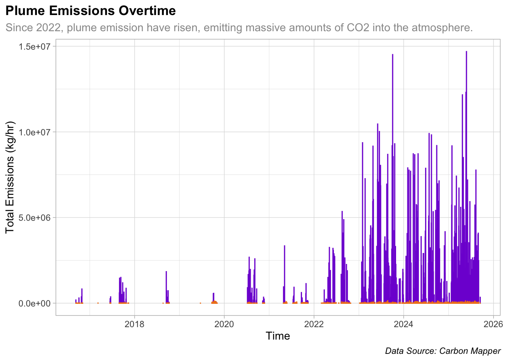
# Plot [CO2] and [CH4] next to eachother
a <- ggplot() +
geom_bar(data = plume_datetime %>% filter(gas == "CO2"),
aes(x = datetime, y = total_emissions),
stat = "identity",
color = gas_pal["CO2"]) +
theme_light() +
labs(y = "Total Emissions (kg/hr)",
x = "Time",
title = "Carbon Dioxide")
b <- ggplot() +
geom_bar(data = plume_datetime %>% filter(gas == "CH4"),
aes(x = datetime, y = total_emissions),
stat = "identity",
color = gas_pal["CH4"]) +
theme_light() +
theme(axis.title.y = element_blank()) +
labs(x = "Time",
title = "Methane")
(a | b ) +
plot_annotation(title = "Plume Emissions Overtime",
subtitle = "Since 2022, plume emission have risen, emitting massive amounts of CO2 into the atmosphere.",
caption = "Data Source: Carbon Mapper",
theme = theme(plot.title = element_text(size = 17, face = "bold"),
plot.subtitle = element_text(size = 11, color = "gray60"),
plot.caption = element_text(face = "italic")))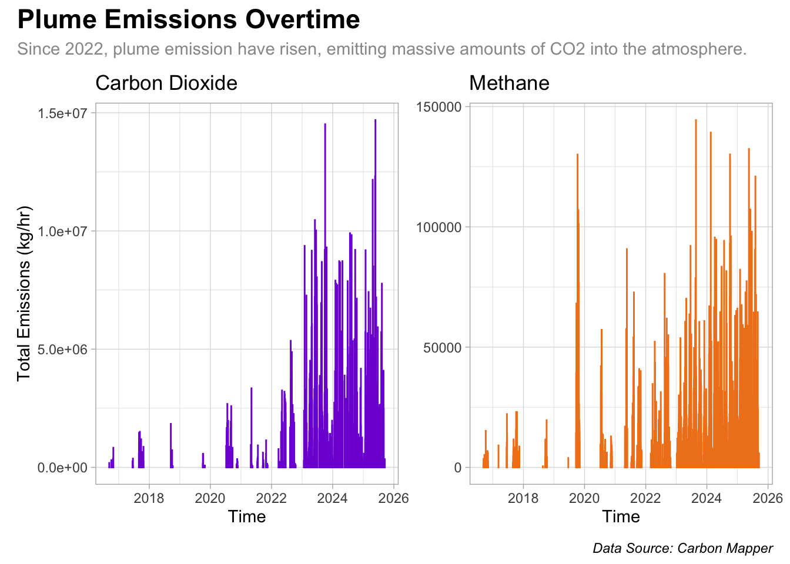
Polar Area Chat
# Plot 2
# Define the y breaks
y_breaks <- c(0, 1e+08, 2e+08, 3e+08) # adjust to your data
# Polar Area Chart
plume_year_plot <- ggplot() +
geom_bar(data = plume_year,
aes(x = year, y = total_emissions, fill = gas),
stat = "identity") +
coord_polar(start = 0) +
theme_minimal() +
scale_fill_manual(values = gas_pal) +
scale_y_continuous(breaks = y_breaks, labels = NULL) + # keep gridlines, remove default labels
annotate("text",
x = 1, # locks labels to first spoke
y = y_breaks,
label = y_breaks,
size = 2.2,
color = "black") +
labs(title = "Yearly Total Plume Emissions from 2016 to 2025",
subtitle = "Spike in carbon dioxide plumes in 2023 to current day.",
fill = "Greenhouse\nGasses",
y = "Total Emissions (kg/hr)",
caption = "Data Source: Carbon Mapper") +
theme(
axis.title.x = element_blank(),
plot.title = element_text(face = "bold"),
plot.subtitle = element_text(color = "grey60"),
legend.position = "none",
plot.caption = element_text(face = "italic")
)
plume_year_plot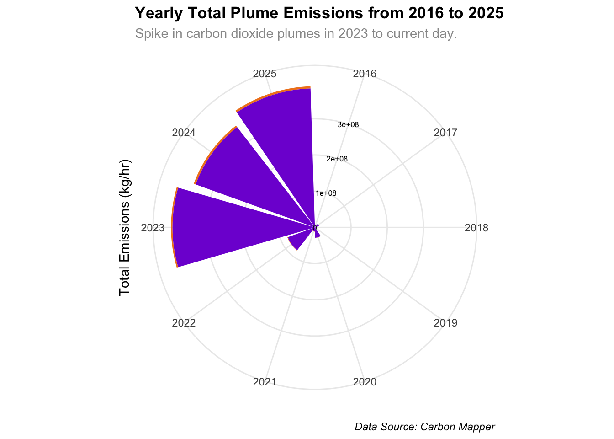
Spatially
Plume as points on a map
CO2_plumes <- plumes %>%
filter(gas == "CO2")
CH4_plumes <- plumes %>%
filter(gas == "CH4")
# Plot plume plots
tm_shape(CH4_plumes) +
tm_dots(fill = "#e87b1b",
fill_alpha = 0.3,
size = 0.3) +
tm_shape(CO2_plumes) +
tm_dots(fill = gas_pal["CO2"],
fill_alpha = 0.3,
size = 0.3) +
tm_basemap("OpenStreetMap") +
tm_title(text = "Global Carbon Dioxide and Methane Plumes") +
tm_credits("Data Source: Carbon Mapper") +
tm_scalebar(position = c("top", "left")) +
tm_compass(position = c("bottom", "left"))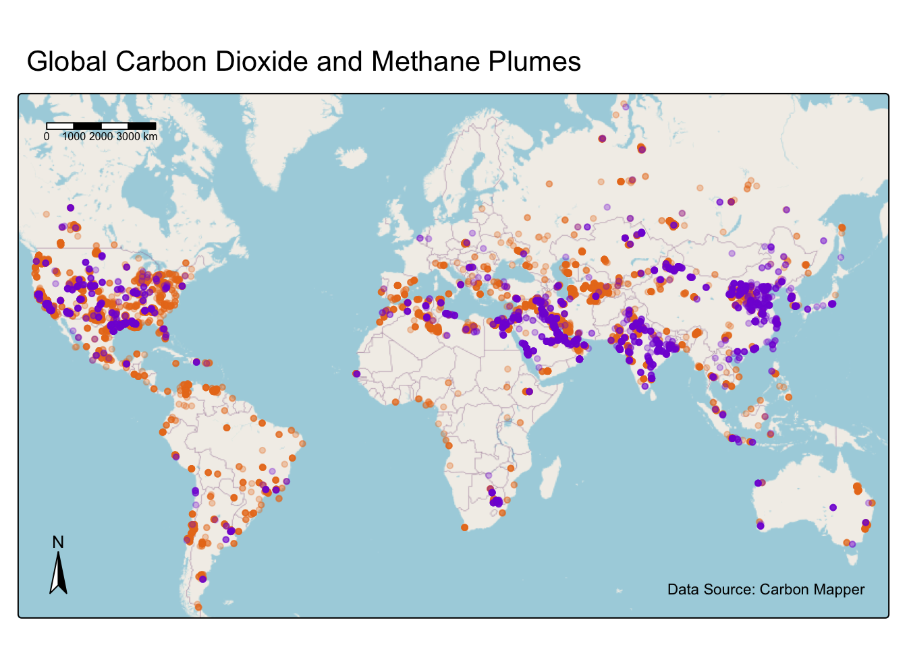
Map sum of all plume emissions
# JOIN Plume + Country data
plumes_country <- st_join(counties, plumes)
# Wrangle: find total emissions and total emissions per capita for each country
plume_country_emissions <- plumes_country %>%
group_by(name_long) %>%
summarise(emission_total = sum(emission_auto, na.rm = TRUE),
pop = mean(pop),
.groups = "drop") %>%
mutate(emission_total_capita = emission_total/pop) # Plot all emissions globally
# Countries Total Emissions
plume_world_plot <- ggplot(plume_country_emissions) +
geom_sf(aes(fill = emission_total)) +
scale_fill_viridis_c() +
theme_void() +
labs(
title = "Total Plume Emissions By Country",
subtitle = "China has the highest plume emissions, followed by India.",
fill = "Total Plume Emission (kg/hr)",
caption = "Data Source: Carbon Mapper"
) +
theme(
legend.position = "bottom",
plot.title = element_text(size = 15, face = "bold"),
plot.title.position = "plot",
plot.subtitle.position = "plot",
plot.caption = element_text(face = "italic")
) +
guides(fill = guide_colorbar(barwidth = 15, barheight = 0.75, title.position = "top"))
# Countries Total Emissions Per Capita
ggplot(plume_country_emissions) +
geom_sf(aes(fill = emission_total_capita)) +
scale_fill_viridis_c() +
theme_void() +
labs(
title = "Total Plume Emissions Per Capita By Country",
subtitle = "China has the highest plume emissions, followed by India.",
fill = "Total Plume Emission (kg/hr) Per Capita",
caption = "Data Source: Carbon Mapper"
) +
theme(
legend.position = "bottom",
plot.title = element_text(size = 15, face = "bold"),
plot.title.position = "plot",
plot.subtitle.position = "plot",
plot.caption = element_text(face = "italic")
) +
guides(fill = guide_colorbar(barwidth = 15, barheight = 0.75, title.position = "top")) Warning in plot_theme(plot): The `plot.subtitle.position` theme element is not defined in the element
hierarchy.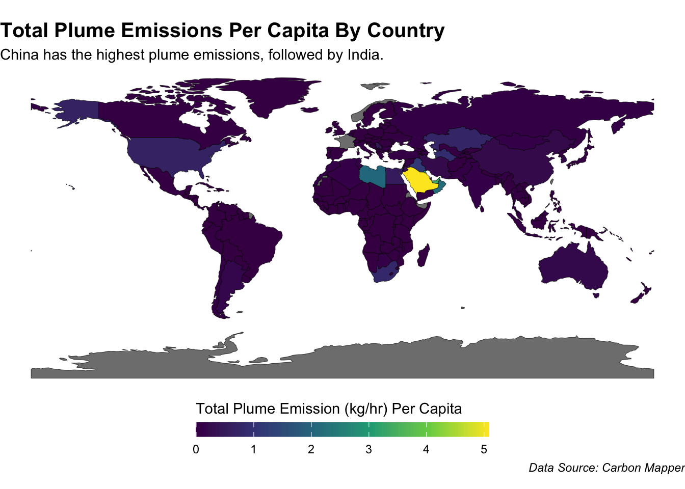
Of the highest emitters, look at their emissions overtime
# Create a function to plot total CO2 and CH4 concentrations overtime in specific countries
country_time_plot <- function(country_name) {
# Wrangle:
plume_country_subset <- plumes_country %>%
filter(name_long == country_name) %>% # Filter for Just China
group_by(year = year(datetime), month = month(datetime), gas) %>% # Find avg and sum for each month of each year
summarise(total_emissions = sum(emission_auto, na.rm = TRUE),
avg_emissions = mean(emission_auto, na.rm = TRUE),
.groups = "drop") %>%
mutate(date = as.Date(paste(year, month, "01", sep = "-"))) %>%
st_drop_geometry()
# CO2 plot overtime
country_CO2 <- ggplot() +
geom_point(data = plume_country_subset %>% filter(gas == "CO2"),
mapping = aes(x = date, y = total_emissions),
color = gas_pal["CO2"]) +
geom_line(data = plume_country_subset %>% filter(gas == "CO2"),
mapping = aes(x = date, y = total_emissions),
color = gas_pal["CO2"]) +
theme_light() +
labs(title = "Carbon Dioxide Plume Emissions",
x = "Time",
y = "Total Emissions (kg/hr)")
# CH4 plot overtime
country_CH4 <- ggplot() +
geom_point(data = plume_country_subset %>% filter(gas == "CH4"),
mapping = aes(x = date, y = total_emissions),
color = gas_pal["CH4"]) +
geom_line(data = plume_country_subset %>% filter(gas == "CH4"),
mapping = aes(x = date, y = total_emissions),
color = gas_pal["CH4"]) +
theme_light() +
labs(title = "Methane Plume Emissions",
x = "Time",
y = "Total Emissions (kg/hr)")
# Put China together
(country_CO2 / country_CH4) +
plot_annotation(title = paste(country_name, "Plume Emissions Overtime"),
subtitle = "IDK.",
caption = "Data Source: Carbon Mapper",
theme = theme(plot.title = element_text(size = 17, face = "bold"),
plot.subtitle = element_text(size = 12, color = "gray60"),
plot.caption = element_text(face = "italic")))
}# Use the function to plot the greenhouse gas emissions in counties with the highest plumes
country_time_plot(country_name = "China")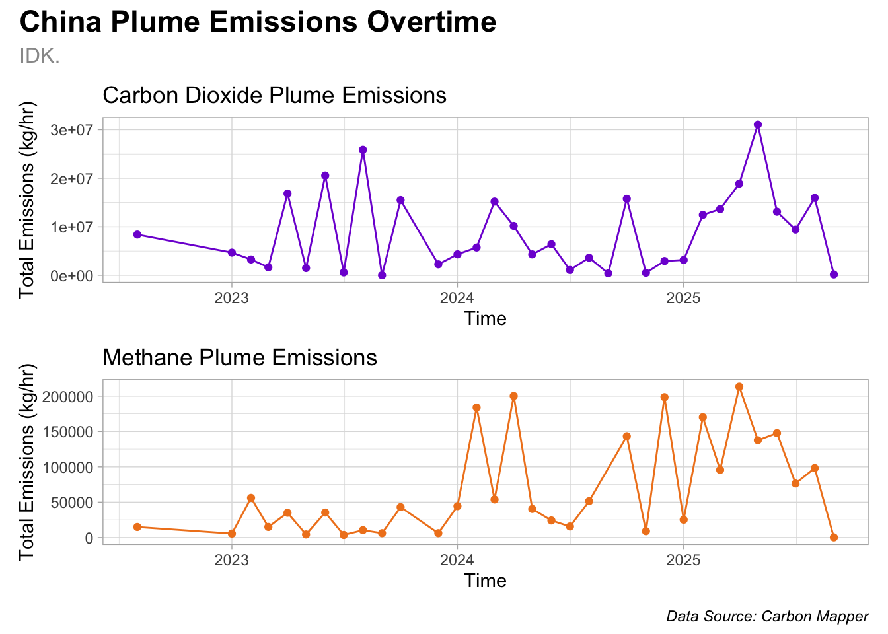
country_time_plot(country_name = "United States")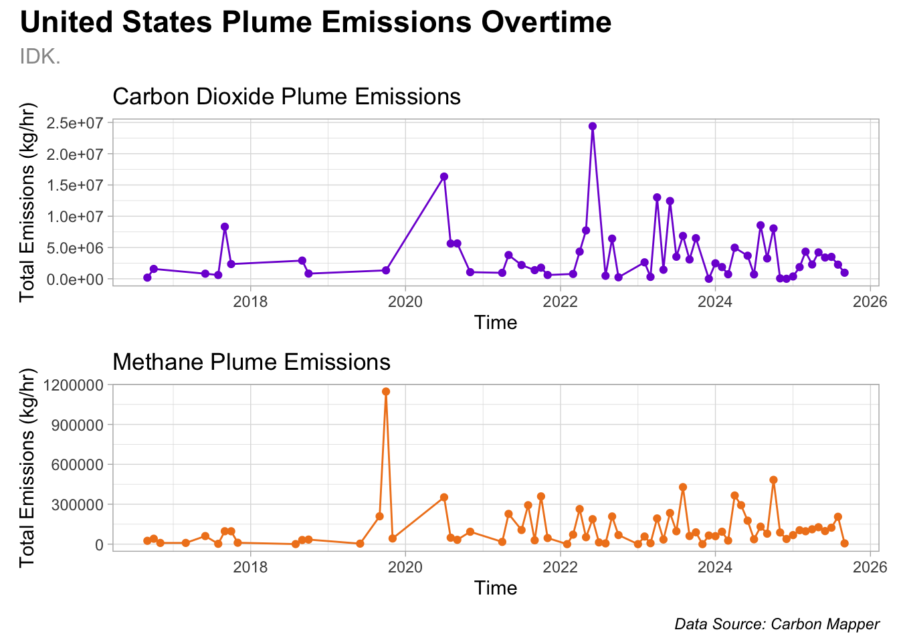
country_time_plot(country_name = "India")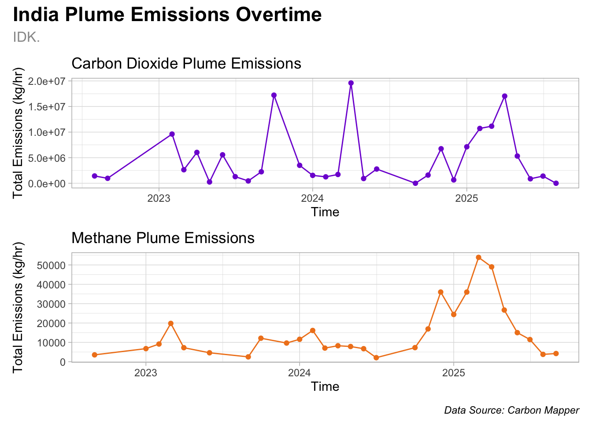
country_time_plot(country_name = "Saudi Arabia")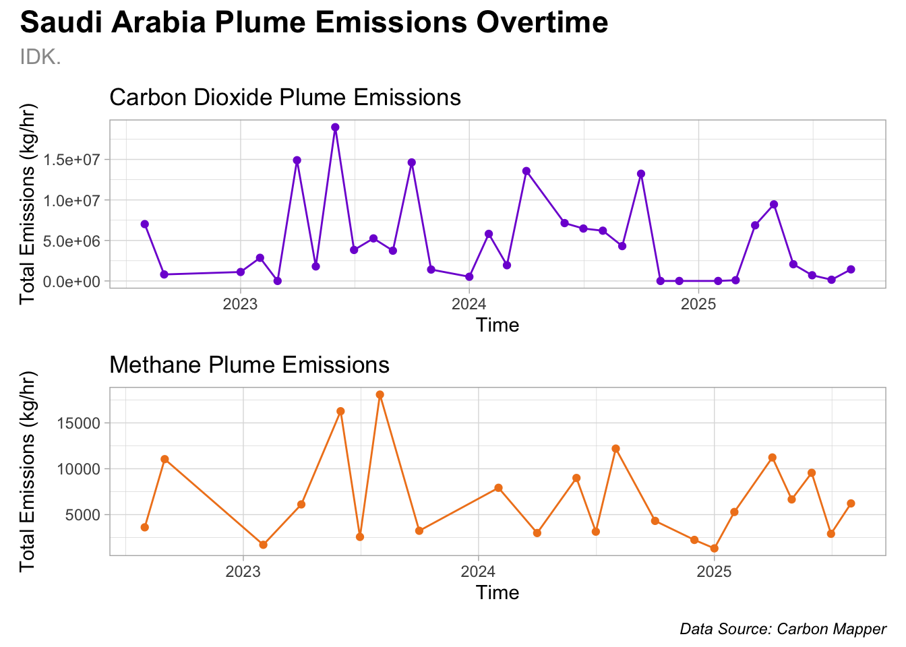
country_time_plot(country_name = "Libya")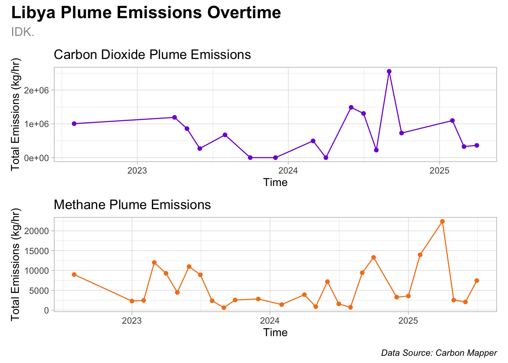
Map CO2 Plume Emissions globally
# Filter for CO2 emissions total per country
plumes_country_CO2 <- plumes_country %>%
group_by(name_long, gas) %>%
summarise(emission_total = sum(emission_auto, na.rm = TRUE), .groups = "drop") %>%
filter(gas == "CO2") %>%
st_drop_geometry()
counties %>% # Want all polygons in the map
left_join(plumes_country_CO2, by = "name_long") %>% # Join counties with filtered df
# Plot
ggplot() +
geom_sf(aes(fill = emission_total))+
scale_fill_viridis_c(na.value = "grey90")+ # Grey out countries with no emissions
theme_void() +
labs(
title = "Total Carbon Dioxide Plume Emissions Per Country",
subtitle = "China has the highest carbon dioxide plume emissions, followed by India.",
fill = "Total Plume Emission",
caption = "Data Source: Carbon Mapper"
) +
theme(
legend.position = "bottom",
plot.title = element_text(size = 15, face = "bold"),
plot.title.position = "plot",
plot.subtitle.position = "plot",
plot.margin = margin(b = 5, t = 5, l = 5, r = 5),
plot.caption = element_text(face = "italic")
) +
guides(fill = guide_colorbar(barwidth = 15, barheight = 0.75, title.position = "top")) Warning in plot_theme(plot): The `plot.subtitle.position` theme element is not defined in the element
hierarchy.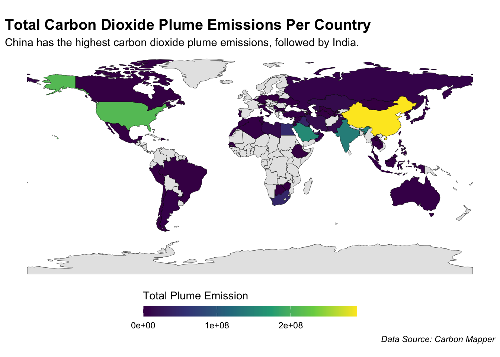
Map CH4 Plume Emissions globally
# Filter for CH4 emissions total per country
plumes_country_CH4 <- plumes_country %>%
group_by(name_long, gas) %>%
summarise(emission_total = sum(emission_auto, na.rm = TRUE), .groups = "drop") %>%
filter(gas == "CH4") %>%
st_drop_geometry()
counties %>% # Want all polygons in the map
left_join(plumes_country_CH4, by = "name_long") %>% # join all counties with CH4 df
# Plot
ggplot() +
geom_sf(aes(fill = emission_total))+
scale_fill_viridis_c(na.value = "grey90")+ # Grey out countries with no emissions
theme_void() +
labs(
title = "Total Methane Plume Emissions Per Country",
subtitle = "China has the highest methane plume emissions, followed by India.",
fill = "Total Plume Emission",
caption = "Data Source: Carbon Mapper"
) +
theme(
legend.position = "bottom",
plot.title = element_text(size = 15, face = "bold"),
plot.title.position = "plot",
plot.subtitle.position = "plot",
plot.margin = margin(b = 5, t = 5, l = 5, r = 5),
plot.caption = element_text(face = "italic")
) +
guides(fill = guide_colorbar(barwidth = 15, barheight = 0.75, title.position = "top")) Warning in plot_theme(plot): The `plot.subtitle.position` theme element is not defined in the element
hierarchy.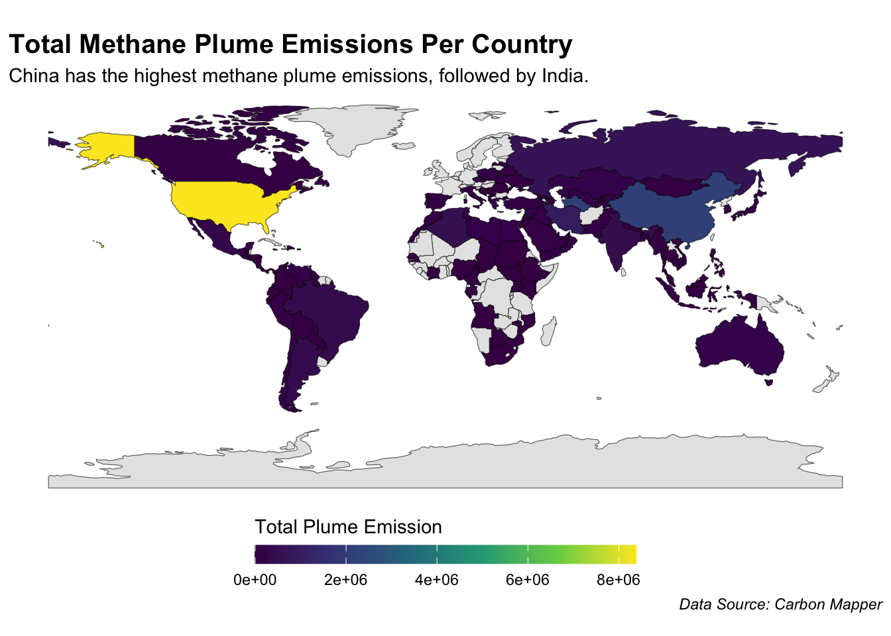
Sectors
Sectors - color palette, dictionary, order
sector_color_pal <- c("Coal Mining (1B1a)" = "#453D68",
"Waste Water (6B)" = "#6C67DF",
"Oil & Gas (1B2)" = "#46C3CA",
"Livestock (4B)" = "#F3F7A2",
"Solid Waste (6A)" = "#F7CAA5",
"Electricity Generation (1A1)" = "#e2863f",
"Other" = "#c41538")
sector_dictionary <- c(
"1B1a" = "Coal Mining (1B1a)",
"6B" = "Waste Water (6B)",
"1B2" = "Oil & Gas (1B2)",
"4B" = "Livestock (4B)",
"6A" = "Solid Waste (6A)",
"1A1" = "Electricity Generation (1A1)"
)
sector_order <- c("Coal Mining (1B1a)", "Waste Water (6B)", "Oil & Gas (1B2)", "Livestock (4B)","Solid Waste (6A)","Electricity Generation (1A1)", "Other"
)Plot plume sectors
# Look at extend of the plume data
# tm_shape(plumes) +
# tm_dots() +
# tm_basemap("Esri.OceanBasemap")
# Data Wrangling
plumeDF_sector_tot_emission <- plumes %>%
group_by(ipcc_sector, gas) %>%
summarise(total_emissions = sum(emission_auto, na.rm = TRUE), # Total Emissions
.groups = "drop") %>%
st_drop_geometry() %>%
filter(!ipcc_sector == "") # remove data points with no sector listed
# Turn sectors into factors
plumeDF_sector_tot_emission$ipcc_sector <- factor(plumeDF_sector_tot_emission$ipcc_sector,
levels = sector_order)
# Methane Sector plot
plumeDF_CH4_sector_plot <- plumeDF_sector_tot_emission %>%
filter(gas == "CH4") %>%
ggplot() +
#geom_treemap(aes(area = total_emissions, fill = ipcc_sector)) + # tree map
geom_bar(aes(x = "", y = total_emissions, fill = ipcc_sector), # Pie chart
stat="identity") +
coord_polar("y", start=0) +
scale_fill_manual(values = sector_color_pal) +
theme_void() +
labs(title = "Methane Plumes",
fill = "Sector") +
theme(plot.title = element_text(size = 13))
# CO2 Sector plot
plumeDF_CO2_sector_plot <- plumeDF_sector_tot_emission %>%
filter(gas == "CO2") %>%
ggplot() +
#geom_treemap(aes(area = total_emissions, fill = ipcc_sector)) + # tree map
geom_bar(aes(x = "", y = total_emissions, fill = ipcc_sector), # Pie chart
stat="identity") +
coord_polar("y", start=0) +
scale_fill_manual(values = sector_color_pal) +
theme_void() +
labs(title = "Carbon Dioxide Plumes",
fill = "Sector") +
theme(plot.title = element_text(size = 13),
legend.position = "none")
# Plots together
plume_sector_plot <- (plumeDF_CO2_sector_plot | plumeDF_CH4_sector_plot) +
plot_annotation(title = "Sector Composition",
subtitle = "The oil and natural gas sector emits the most methane,\nwhereas Electricity Generation emits the most carbon dioxide.",
caption = "Data Source: Carbon Mapper",
theme = theme(plot.title = element_text(size = 17, face = "bold"),
plot.subtitle = element_text(size = 12, color = "gray60"),
plot.caption = element_text(face = "italic")))
plume_sector_plot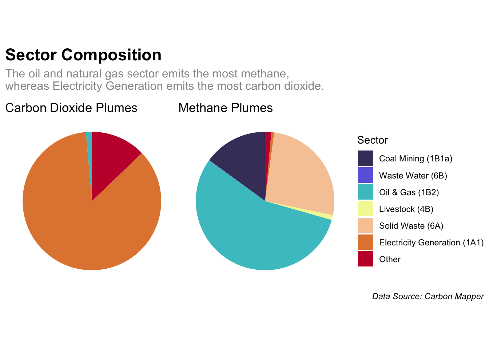
# Mathane has plumes with blank sectors ? - IDK what do with these 10 points
plumes %>%
filter(ipcc_sector == "") %>%
tm_shape() +
tm_dots() +
tm_basemap("Esri.OceanBasemap")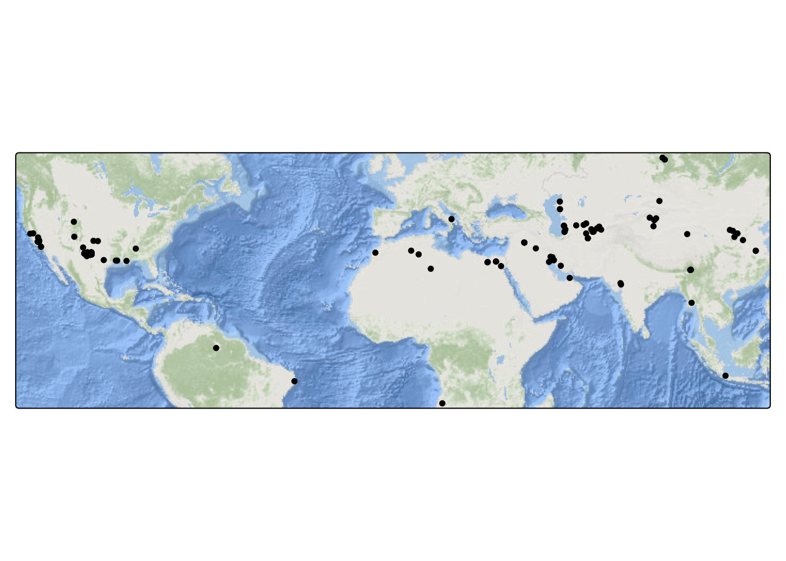
Gas Differences
Having a really hard time with this concept
My goal is to show the difference between CO2 and CH4 emission concentration (CO2 has higher emission rates) and warming potential (Methane has a larger warming potential). Additionally, adding the life time of each chemical would be interesting too. I am having a hard time conceptualizing the different scales on a plot. I played around with a bar and portional circle graph.
gwp <- data.frame(gas = c("CO2", "CH4"),
life_time = c(500, 12.4), # Chem life times
gwp = c(1,32), # global warmining potential
abundance_increase_ppm = c(130, 1.1)) # concentration increase Bar Chart (for the code hand draw viz)
emissions_conc_plot <-
ggplot(gwp) +
geom_bar(aes(fill=gas, y=abundance_increase_ppm, x=""),
position='dodge', stat='identity') +
scale_fill_manual(values = gas_pal) +
labs(y = "Abundace (ppm)",
title = "Abundance since\nPre-Industrial Times") +
theme_light() +
theme(legend.position = "none",
#plot.title = element_text(face = "bold"),
plot.subtitle = element_text(color = "grey60"),
axis.title.x = element_blank())
emissions_gwp_plot <- ggplot(gwp) +
geom_bar(aes(fill=gas, y=gwp, x=""),
position='dodge', stat='identity') +
scale_fill_manual(values = gas_pal) +
labs(y = "Global Warming Potential",
title = "Global Warming\nPotential (gwp)") +
theme_light() +
theme(legend.position = "none",
#plot.title = element_text(face = "bold"),
plot.subtitle = element_text(color = "grey60"),
axis.title.x = element_blank())
emissions_wp_conc_plot <- (emissions_conc_plot | emissions_gwp_plot) + plot_annotation(title = "Greenhouse Gasses Abundance and Global Warming Potential (GWP)",
subtitle = "While significantly more CO2 is emitted into the atmohsphere,\nCH4 has a 30 times greater warning potential.",
caption = "Data Source: Carbon Mapper",
theme = theme(plot.title = element_text(size = 17, face = "bold"),
plot.subtitle = element_text(size = 12, color = "gray60"),
plot.caption = element_text(face = "italic")))
emissions_wp_conc_plot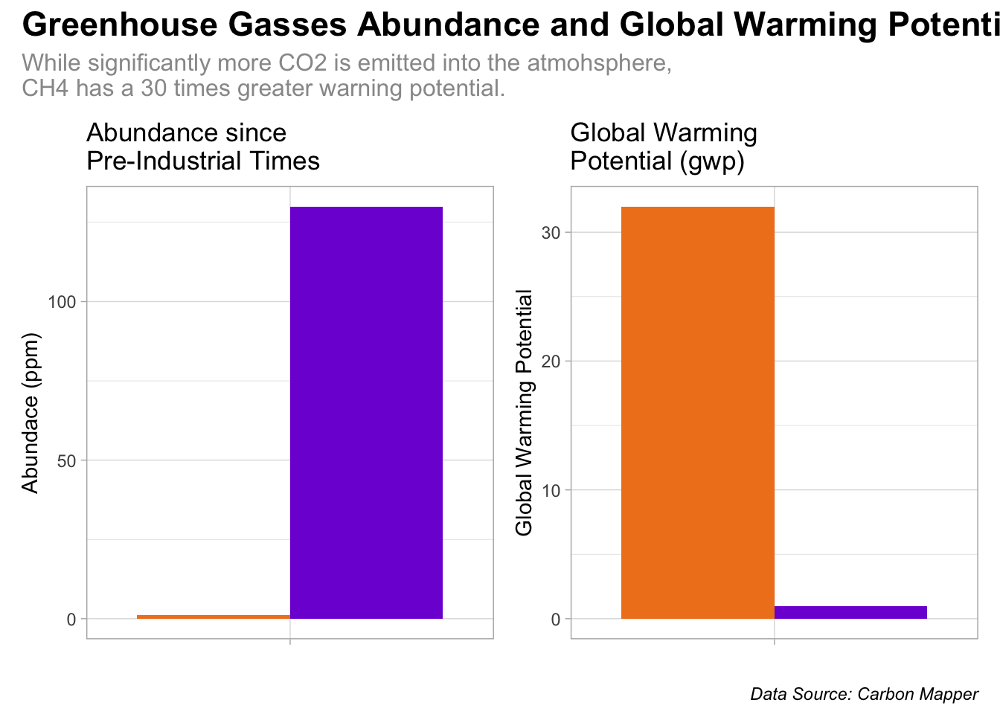
Try to Use Proportional Circle Graph
I like this idea. Might come back to it later.
# Normalize from [0,1]
gwp <- gwp %>%
mutate(
gwp_norm = gwp / max(gwp),
abundance_norm = abundance_increase_ppm / max(abundance_increase_ppm)
)
# GWP portional circle graph
gas_gwp_plot <- ggplot() +
geom_point(data = gwp,
mapping = aes(x = gas, y = 0, size = gwp, fill = gas),
shape = 21, color = "black", alpha = 0.7) +
scale_size_area(max_size = 20) + # Ensures area ~ value
coord_fixed(ratio = 5) + # Keep circles round
theme_minimal() +
scale_fill_manual(values = gas_pal, guide = "none") +
labs(
title = "Global Warming Potiential (gwp)",
size = "Value"
) +
theme(axis.text.y = element_blank(),
axis.ticks.y = element_blank(),
axis.title.y = element_blank(),
axis.title.x = element_blank(),
legend.position = "bottom")
# Increase in Abundace since pre-Industrial Times (ppm)
gas_concentration_plot <- ggplot() +
geom_point(data = gwp,
mapping = aes(x = gas, y = 0, size = abundance_increase_ppm, fill = gas),
shape = 21, color = "black", alpha = 0.7) +
scale_size_area(max_size = 20) + # Ensures area ~ value
coord_fixed(ratio = 5) + # Keep circles round
theme_minimal() +
scale_fill_manual(values = gas_pal, guide = "none") +
labs(
title = "Increase in Abundace since pre-Industrial Times (ppm)",
size = "Value"
) +
theme(axis.text.y = element_blank(),
axis.ticks.y = element_blank(),
axis.title.y = element_blank(),
axis.title.x = element_blank(),
legend.position = "bottom")
(gas_gwp_plot | gas_concentration_plot)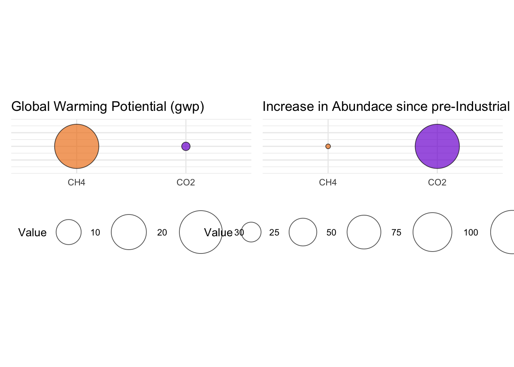
Hand Drawn Visualizations
knitr::include_graphics(here::here("anticipiated_vis.PNG"))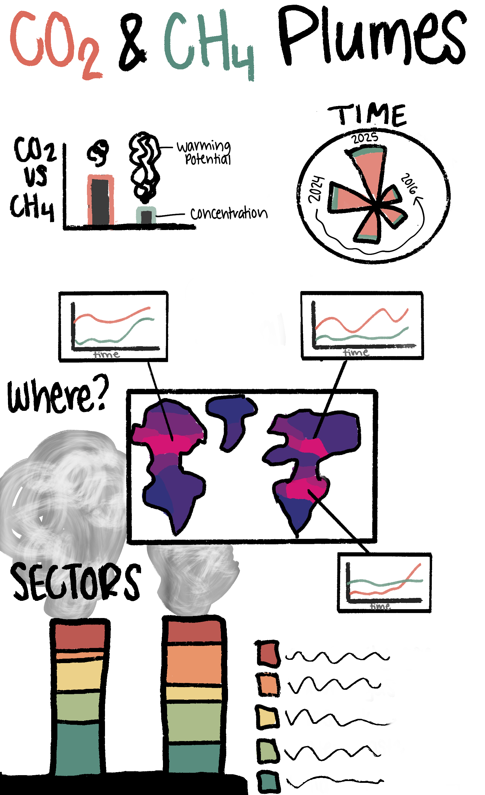
Code the Hand Drawing
Create the base plot
# Create title
main_title <- glue::glue(
"<span style='color:#7F28D5;'>Carbon Dioxide</span>
and
<span style='color:#F0831F;'>Methane</span>
Plumes"
)
# Create Base plot
plot_base <- ggplot() +
labs(
title = main_title,
subtitle = "Understanding Global Plume Emissions"
) +
theme_void() +
theme(plot.title = element_markdown(size = 30),
plot.subtitle = element_markdown(size = 15))TRY to create the hand draw visualizations
# Put pieces together
plot_final <- plot_base +
inset_element(emissions_wp_conc_plot, left = 0, right = 0.50, top = 0.97, bottom = 0.76) +
inset_element(plume_year_plot, left = 0.55, right = 0.95, top = 1.07, bottom = 0.6) +
inset_element(plume_world_plot, left = 0.05, right = 0.97, top = 0.8, bottom = 0.22) +
inset_element(plume_sector_plot, left = 0.05, right = 0.8, top = 0.3, bottom = 0)
# Save
ggsave(plot = plot_final,
filename = here::here("outputs", "fpm3_infographic.png"),
height = 16,
width = 10)Warning in plot_theme(plot): The `plot.subtitle.position` theme element is not defined in the element
hierarchy.Questions
1. What are the key insights you want your infographic to communicate, and how will your design choices help highlight and support those messages?
- I want to the reader to know who (countries and industries) are creating the most greenhouse emission plumes. To do this, I will use maps and parts of whole plots and annotations to explain these results.
2. What challenges did you encounter or anticipate encountering as you continue to build / iterate on your visualizations in R? If you struggled with mocking up any of your three visualizations, describe those challenges here.
The temporal plot is not representing the data well because the data has missing past data.
I am having a hard time showing CO2 and CH4 emissions on the same plot because of difference in emission magnitude.
Having a REALLY difficult time placing all the plots on a single image. I do NOT understand the left, right, top, bottom parameters.
In the plots where I used patchwork to merge plots together, the title annotations disappeared on the final info graphic
3. What ggplot extension tools / packages do you need to use to build your visualizations? Are there any that we haven’t covered in class that you’ll be learning how to use for your visualizations?
- None as of now.
4. What feedback do you need from the instructional team and / or your peers to ensure that your intended message and key insights are clear?
Feedback on the questions within the pre-planning table would be lovely!
Ideas on the infographic design and plots.